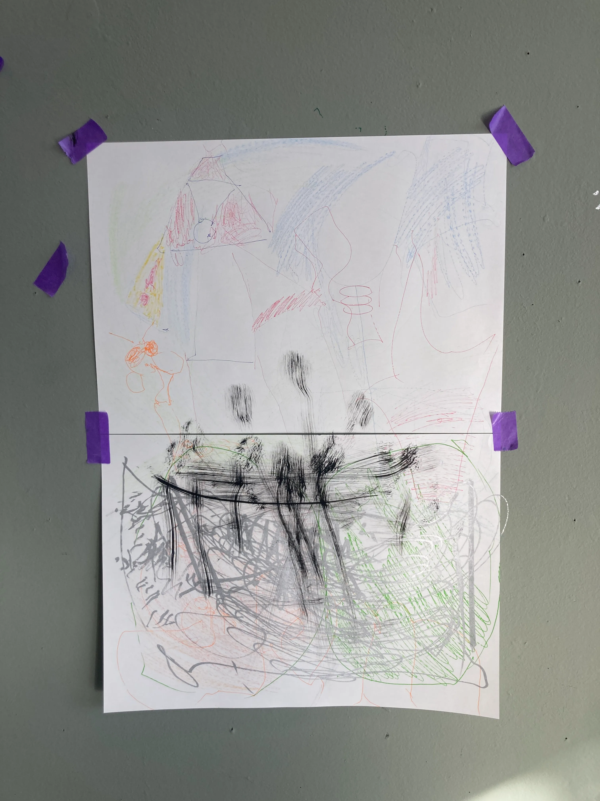
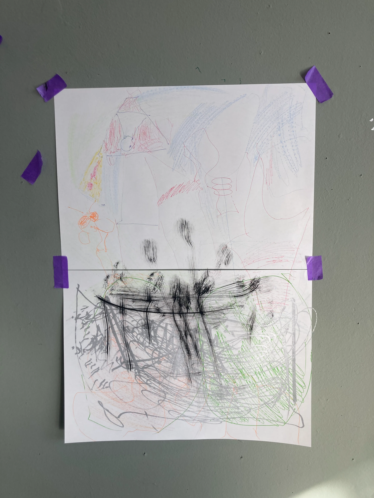
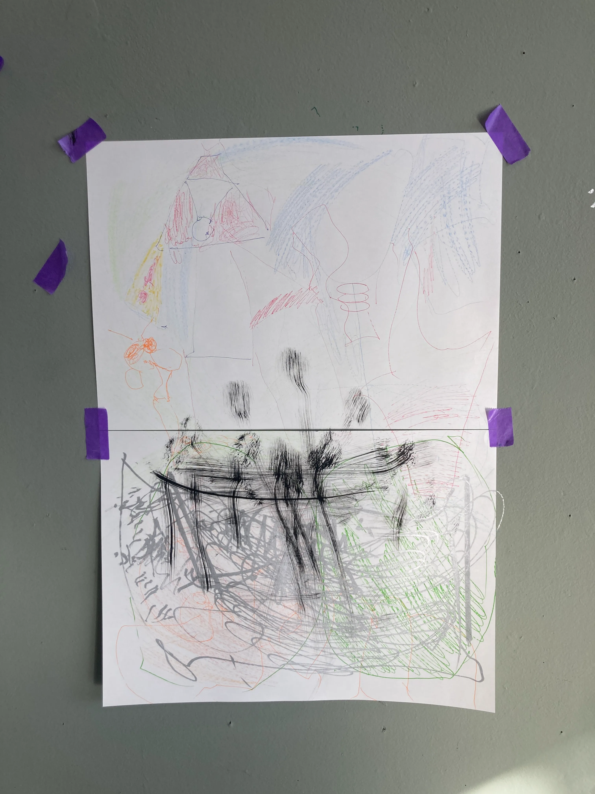

some columns, maybe I'll add some later, in an other way...
01 summary
02 contact and some words
03 some expe
currently studying graphic design
at the Gerrit Rietveld Academie
leobidani@proton.me
+33 7 61 51 44 28
express in a thin and colorful way
missing structural elements
the device may be in A3 I think, so A4 metal plate and A4 papers
because maybe, A1 is too big????
Hello,
Missing Structural Elements is a visual device that highlights essays and graphic experiments revolving around the idea of structure.
What is structure?
I’m interested in the grid in graphic design — but also in what it represents politically. Where does it come from?
I learned during my theory class with Zachary, an amazing teacher, that the grid is something immutable. It is imperialist and was created for capitalist purposes — to commercialize plots of land (“Jeffersonian Grid,” Designing History. Documents and the Design Imperative to Immutability, Chris Lee).
Anyway, I learned quite a lot about this grid, but I only really began to take an interest in it after discovering why I ended up growing up in Longwy, in the northeast of France.
Both my grandfathers — one from southern Tunisia and the other from northern Italy — came to work in that huge steel factory.
I recently understood why I’ve always felt a certain absence — a lack of so many “Structural Elements” related to my two cultures. I realized that all these “Structural Elements” had been erased.
The Longwy steelworks was erased from the face of the earth. I’ve never seen its remains; the few traces left have been hidden, and the stories silenced.
As I continue through life as someone deprived of “structural elements” — of culture, of meaning — I’ve turned to drawing more intensely, as if it allowed me to create some of those missing “structural elements.”
I need to look more deeply into the term structural, because I don’t think I’m misusing it.
This text is an essay accompanying a piece I’m currently developing — a device of the in-between, showing both a structure and something missing.
